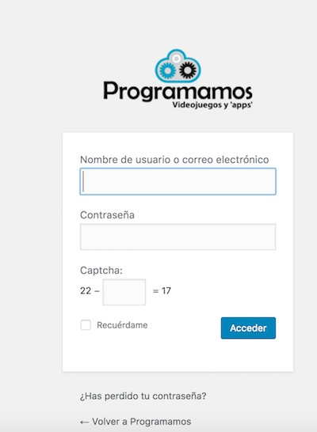

Hay muchos temas de apariencia que solucionan este problema, pero muchos otros no. Para esos casos, la solución es muy sencilla. Tan solo tendremos que añadir algo de código a nuestro Wordpress.
Lo primero que hay que hacer es editar el archivo functions.php de tu tema de apariencia. Para ello, lo más sencillo es acceder a “Apariencia - editor” de la parte de administración de nuestro Wordpress y seleccionar “functions.php”. A continuación, añade el siguiente código:
// Logo personalizado en login
add_action("login_head", "my_login_head");
function my_login_head() {
echo "
<style>
body.login #login h1 a {
background:
url('".get_bloginfo('template_url')."/images/ProgramamosLogo.png')
no-repeat scroll center top transparent;
height: 99px;
width: 220px;
}
</style>
";
}
// personalizar url logo acceso
add_action( 'login_headerurl', 'my_custom_login_url' );
function my_custom_login_url() {
return 'http://programamos.es';
}
}
Y eso es todo. A partir de ahora la página de acceso a la administracion de tu Wordpress mostrará tu logo y al hacer clic te llevará a la página principal. Este es el resultado:

¡Hasta otra!
comments powered by Disqus